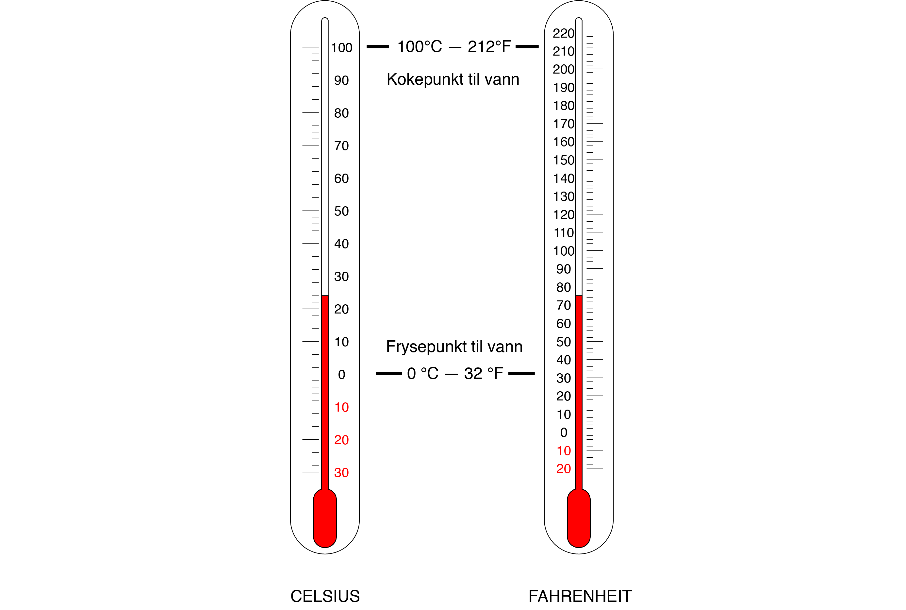
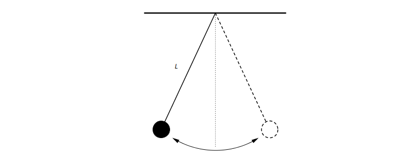

Å regne med Formler
Contents
Å regne med Formler¶
Nå skal du lære å arbeide med formler. Mens en likning er en likhet som kan være sann for noen ukjente (\(x\) eller andre ukjente størrelser), så er en formel en likhet som uttrykker noe som gjelder uansett hva den ukjente er.
Her er noen eksempler på formler:
\(O=2\pi\cdot r \qquad \) \( A = \pi r^2\qquad \) \( s=v\cdot t \qquad \) \( a^n \cdot a^m = a^{n+m}\)
Målet er at du skal lære å
bruke formlene til å regne ut ulike størrelser
«snu» på formlene
Parametre¶
Hvordan ville du gå fram om jeg ba deg løse likningen nedenfor?
Jeg tipper du ville fått \( x=\dfrac{d-b}{a}\) som svar. Bak dette svaret ligger en lang tradisjon som går helt tilbake til den franske matematikeren og filosofen René Descartes (1596 - 1650). Når du ser slike likninger, så tenker du at x-en og de andre bokstavene spiller ulike roller. Vi kaller a, b og d for parametre. Mens x-en i en likning står for et tall som vi ønsker å finne, så representerer \(a, b\) og \(d\) variable størrelser som kan ha mange ulike verdier.
Vi bruker bokstaver på forskjellige måter i matematikken. Du vil møte ord som variabel, konstant, ukjent og parameter.
Variable størrelser¶
I stedet for å gi konkrete talleksempler, så skriver vi formlene våre med bokstaver. På den måten kan vi bruke formlene for flere tall. I leksjonen om potenser generaliserte vi ved å skrive potensreglene med slike bokstaver. Alle slike bokstaver er det vi kaller for variable størrelser.
Konstanter¶
Mens bokstaver som oftest står for variable størrelser, så er det et unntak vi må presisere. Av og til bruker vi bokstaver til å representere gitte faste tall. I formelen
er det kun \(A\) og \( r\) som er variable størrelser. Den greske bokstaven \(\pi\) representerer et bestemt tall, nemlig tallet 3,4159265359… (som er definert til å være forholdet mellom omkrets og diameter til en sirkel).
Ukjente¶
Når du løser en likning, så søker du å bestemme ett eller flere tall \(x\) som passer inn i en likning. Den ukjente \(x\)-en kan med andre ord ikke velges fritt blant alle tall. Den er kun visse tall som passer!
Parametere¶
I likningen \(ax+b=c\) står \(x\) for en ukjent, mens \(a\), \(b\) og \(c\) er variable størrelser. Du kan bruke slike parametre når du skal generalisere.
Lineære funksjoner
Alle lineære funksjoner kan skrives på formen \( y=ax+b\) Her er \(a\) og \(b\) generelle tall, mens \(x\)-en kan velges fritt blant de reelle tall.
Å «snu» på formler¶
Formelen for arealet av et rektangel er gitt ved
Du kan snu på denne formelen ved å løse den som en likning med for eksempel \(h\) som den ukjente. Du får da:
Du har altså funnet en formel for \(h\):
Eksempel: Fahrenheit og Celcius

I USA er det vanlig å måle temperatur i grader fahrenheit. Dersom det er \(21^\circ\)C, så er det \(70^\circ\) F.
Vi har en formel for sammenhengen mellom grader fahrenheit og grader celsius:
Setter du inn C=21 i formelen over, får du
Hvis du ønsker å finne hvor mange grader celsius det er når du vet at det er \(90^\circ\)F, så kan du løse likningen
Løser du denne likningen, vil du få at \(C=32\) .
Oppgave 1
I stedet for å løse slike likninger hver gang du ønsker å finne temperaturen i grader celcius, kan du finne en generell formel for grader celcisu \(C\) ved å snu på formelen \(F=\frac 9 5 \cdot C +32\).
Finn en formel for \(C\) uttrykt ved hjelp av \(F\).
Løsningsforslag
Trekker du fra 32 på hver side får du
Ved å multiplisere begge sider med \( \dfrac{5}{9}\) får du svaret, siden
er lik
Eller om du vil:
Oppgave 2 (Eksamen Høsten 2021)

Ovenfor ser du en pendel. Pendelen er en kule som henger i en snor med lengde L meter. Tiden T sekunder som det tar for pendelen å bevege seg én gang fram og tilbake, kalles svingetiden. Svingetiden er avhengig av snorens lengde. Sammenhengen er gitt ved formelen
Her er \(g \approx 9,81\).
Gjør om på formelen ovenfor slik at du får en formel for L uttrykt ved T.
I videoen under kan du se hvordan du kan løse oppgaven ovenfor ved regning og ved bruk av GeoGebra CAS.